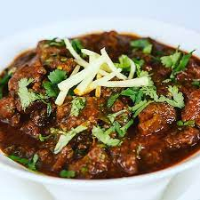

Recipe for lamb

Description
Very tender and delicious. Can be simmered on stove top or placed in slow cooker for 6 to 8 hours. Add water for more sauce.
Ingredients:
- 3 tablespoons canola oil
- 1 onion, finely chopped
- 4 cloves garlic, crushed
- ½ teaspoon cumin seeds, or to taste
- 1 pound lamb stew meat, cubed
- 3 tablespoons tomato paste
- 2 teaspoons ground coriander
- 2 teaspoons salt, or to taste
- 2 teaspoons garam masala
- 1 ½ teaspoons ground turmeric
- 1 teaspoon red chile powder, or to taste
Steps to make:
- Step 1: Heat canola oil in a saucepan over medium heat.
- Step 2:Cook and stir onion, garlic, and cumin seeds in the hot oil until onion is browned, 10 to 15 minutes.
- Step 3: Add lamb, tomato paste, coriander, salt, garam masala, turmeric, and red chile powder; stir to coat. Cover saucepan and simmer until meat is tender and no longer pink in the center, about 1 hour.